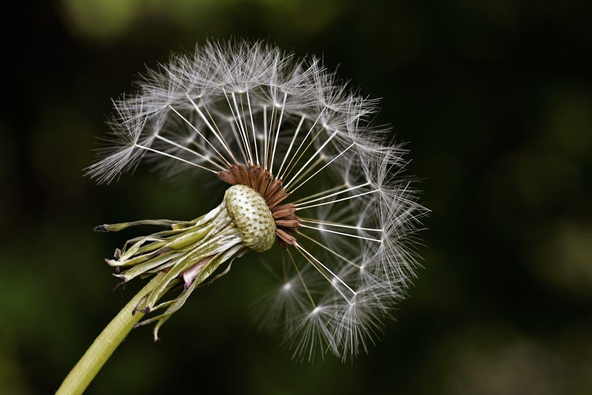

Hot Honey
The following exposition puts forth a method that may make it possible to concentrate vast amounts of sunlight, using magnifying glasses, to melt metals or drive chemical reactions.
There do exist much larger setups along with automated sun-tracking motors that reach higher temperatures, but they look like they would cost a fortune to install and to mantain. Also it would seem that as these dishes get larger, it then becomes increasingly difficult to maintain a similarly tight focal spot and so they tend to spread out anyway, diffusing the light.
For the goal of concentrating light either reflection or refraction can be utilised, which means practically, mirrored surfaces or lenses. And people have used huge Fresnel lenses in attempting to melt metals in their backyards, with some success.
A Fresnel lense is like a magnifying glass that has been flattened down by removing the excess material.
However not all Fresnel lenses are created equally and there can be vast differences in the effective concentrating power between different lenses.
This is just a friendly reminder not to huff lead like this guy and his friend. Some great shots with the camera though showcasing the focal point.
Large fresnel lenses are not easy to manufacture however and from what I can gather are mostly scavanged in a DIY fashion from old rear-projection television sets which are no longer produced.
As an interesting side note, one could never condense light to be brighter, or in temperature hotter, than the surface of the material that is emitting that light.
Now for reference these are what actual giant magnifying glasses look like.

And unfortunately I don't think it would be viable to cheaply produce giant magnifying glasses at home, although I always stand to be corrected. From what I can can gather lens making is notoriously difficult.
While a regular magnifying glass may not require the same quality finish as a camera lens, it would still present a massive challenge to produce in one's garage with little specialised equipment. And then most cheaply available store bought magnifying glasses are able to produce a crisp focal area about the size of a peppercorn. I would imagine that it would get exponentially more difficult to produce larger and larger magnifying glasses with the same effective focal concentrations.
Now, regular store-bought magnifying glasses are usually of a quite high standard and also at the same time are usually quite cheap since they are produced in mass.
So, what if we simply compounded the focal spot by shining multiple regular sized magnifying glasses onto the same spot?
"Hang on, you big knob, you can't do that!" some of you might be saying, particularly if they have been playing around with magnifying glasses in the sun lately.
And it would be true that for any such arrangement only one magnifying glass could possibly line up square with the sun at any given time, thus rendering all the other magnifying glasses useless.
Except that had me thinking... mirrors.
No, seriously.
Couldn't one simply reroute the sun's rays directly onto each one of the magnifying glasses by reflecting it off of meticiliously aligned mirrors? Searching for more information on this online yielded nothing and so I must assume that nobody has actually tried this before.
I haven't been able to afford the few pieces of equipment necessary to perform such an experiment. So please have a look at my support page if you'd care to help out.
Extending this idea to it's limit then one could surround a single focal point by a sphere of magnifying glasses concentrating light onto it, each a focal distance away.
A dandelion resembles something of the concept.


The actual number of magnifying glasses that this would amount to would of course depend on their properties such as their focal distances and their diameters. But I would imagine that twelve or more could comfortably fit into a circle and thus upwards of thirty could fit into a sphere, all shining onto a single spot. That's a lot of power!
Bear in mind that even just one of those focused magnifying glass hot-spots is enough to combust small twigs and paper and such as one could presumably verify for oneself.
● This article is still in progress, more to be added soon! ●
Copyright © 2026 sand.script.s